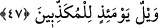
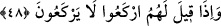

cinâyetleri hatırlatılacaktır.
Burada şöyle bir itiraza mahal yoktur: “Bu insanlar âhirette azâb içinde olduklarına ve
herhangi bir nimeti tatma durumunda olmadıklarına göre nasıl olur da onlara orada
“yiyin, birazcık faydalanın” ifâdesi ile hitâb olunabilir? Bir başka ifâdeyle bu “yiyin,
birazcık faydalanın” cümlesi onlara âhirette söyleneceğine göre bu ifâde gerçek
anlamıyla dünya nimetinden yeme ve faydalanma talebi olamaz. Çünkü artık dünya
hayatı geride kaldığına göre bu mümkün değildir.” Bu itiraza şöyle cevap vermek
mümkündür; onlara “yiyin, birazcık faydalanın” ifâdesi yukarda zikrettiğimiz ifâdeyi
hatırlatmak için söylenecektir. Şu hâlde âhiretteki “yiyin, birazcık faydalanın” emri bir
azarlama, bir hasret ve iç yangısı uyandırma ve bir hüzün verme emridir.
Görüldüğü üzere onların bu harekete maruz kalmalarının sebebi ise nefislerine zulüm
ederek mücrim olmalarıdır. Bu da gösteriyor ki her mücrimin âkıbeti bu olacaktır ve
âkıbeti bu olan her mücrim dünyada iken sâdece sayılı bir kaç gün yiyip,
faydalanabilecektir. Sonra âkıbet ebedî helâk içerisinde kalmaktan ibâret olacaktır.
47. O gün, (hakîkatleri) yalan sayanların vay hâline!
Çünkü onların nefisleri az bir nimetle azıcık faydalanmak sûretiyle sürekli bir azâba
maruz kalmışlardır.
et-Te’vilâtü’n-Necmiyye’de şöyle deniyor: Sizler mücrimlersiniz yâni sizler alçak
hey’eti ve hoşnut olunmayan melekeleri kazanan kimselersiniz. O gün evsaf-ı hamidenin
ahlâk-ı zemimeden daha üstün olduğunu yalan sayanların vay hâline!
48. Onlar, kendilerine: «Allah’ın huzûrunda eğilin!» denildiği vakit eğilmezler.
“Onlara” yâni yalan sayanlara “rükû edin” Allah’a itâat edin, ondan huşû duyun.
Allah’a karşı onun vahyini kabul etmek, dinine uymak sûretiyle tevâzu sâhibi olun, O’na
boyun eğin. Bu böbürlenmeyi ve bu tekebbürü reddedin “denildiği zaman rükû
etmezler.” Onlardan rükû etmelerinin istenmesi sebebsiz ve boşuna değildir. Çünkü
herhangi bir kimseye rükû edip, boyun bükmek, ona karşı tevazuda bulunmak, ona
ta’zimde bulunmak anlamına gelir. Secde ise tevazu ve ta’zim anlamı bakımından
rükû’dan daha büyüktür. Bundan dolayı derler ki: Allah’tan başkasına secde etmek -
eğer ibâdet amaçlı ise- doğrudan doğruya kâfirliktir. Allah’tan başkasına secde etmek -
eğer o kişiye ta’zim amaçlıysa- o zaman büyük bir tehlike demektir.
İbn Şeyh’in Havâşî’sinde şöyle deniyor: Dil bilgisi açısından “rükû” bir kimsenin